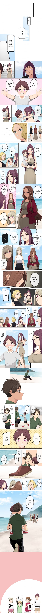

결국 완결난 이마이즈미네 집은 아무래도 갸루의 아지트가 된 모양이다
댓글
다부다처는 그뭔씹ㅋㅋㅋㅋ
동급생 세명 말고 또 있음?
그 세명중의 언니 있음
능력자네;;
걸레이즈미
그렇게 쥐어짜이고 다크서클 하나 없네 유전자다 유전자
이거 진짜에요?
개인적으로 저 누나는 왜 넣었는지 모르겠음.
다부다처제 남창엔딩이라고?
정실을 못고른 겁쟁이 엔딩
유기 할바엔 겁쟁이 엔딩이 맞다
정력왕 대체 얼마나 절륜해야 하는것이냐
그림 왤케 망가졌냐 이마이즈미 콧대 ;;;
돈 벌만큼 벌었군
코가 거의 발사되는 수준으로 튀어나와있네 ㅋㅋㅋ
포르쉐 샀으니 여기서 떠나야지
전원 임신이지?
다부다처제면 다른 남자도 있단거 아님?
저 오시마이 에서 시마이는 끝인데 오가 붙는 이윤 모야? 영어 the랑 같은 건가? 오모찌나 그런거 잇잖아
오 붙이면 단어가 부드러워지고 조금 공손에 의미가 담겨있다는데
오그렇군요
오(お)가 미화어라 꼭 붙이고 그냥 시마이는 거의 안쓴다네
어이가 없네 시발 ㅋㅋㅋㅋㅋㅋㅋㅋㅋㅋㅋㅋㅋㅋㅋㅋㅋㅋㅋㅋ
옆모습 존나 웃기게생겼네 ㅋㅋㅋㅋ
이상한 파트는 양지쪽으로 보내고
8편 내내 떡만치다 끝낸 음지의 모범작품임
일부다처가 아니라 다부다처…?